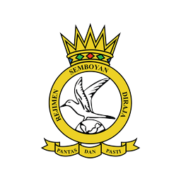

GovernmentSPAKE 4.0
Asset management for communications and electronics equipment — registry, servicing and full lifecycle records.
ENGINEER. ANALYST. BUILDER.
I'm Kamizan — a senior programmer turning real-world complexity into software that works. From the factory floor to the app in your pocket.
Systems in production for Malaysian government agencies, alongside the things I build on my own time.

GovernmentAsset management for communications and electronics equipment — registry, servicing and full lifecycle records.
 Government
Government
Integrated computer and equipment management for an army air corps — inventory, servicing and reporting.
 Government
Government
Fleet management across web and mobile — vehicles, bookings, journeys and live location tracking.

Android fitness app — step and run tracking, self-completing tasks, group chat with games, and a social feed. Designed, built and shipped end to end by one person, including the foreground location service.
Download the appSecurity assessment of a RunCloud-managed stack — configuration, access control and exposure.
View on GitHubAn interactive Flutter app built to work through game logic and state handling in Dart.
View on GitHubDocumented and structured a Laravel API surface with Swagger, covering contracts and versioning.
A DIFFERENT WAY TO MEET ME
Step into Systems Arena. Fight bugs, defend your infrastructure, and discover the skills behind the work in an interactive 3D arcade.
Enter the arena ↗3 WAVES · KEYBOARD + TOUCH · NO INSTALLI build systems that production floors depend on.
Seven years across manufacturing, semiconductor and government work has taught me that most software problems start as process problems. So I spend as much time on the floor with engineers and supervisors as I do in the editor — gathering requirements, then turning them into workflows people actually use.
That's meant configuring in-house MES/ERP systems and Electronic Data Capture, wiring invoicing straight into on-premise SAP Business One, running full UAT and FAT deployment cycles, and shipping Laravel/Vue platforms and Flutter apps on top. I work efficiently with minimal supervision, and just as comfortably inside a team.
Senior Programmer at YHCM Sdn Bhd in Wangsa Maju, KL — leading the design of enterprise-grade applications, mentoring junior developers through code review, and streamlining how the team ships.
What I reach for, grouped by what it's for. Highlighted items are the ones I'd be comfortable being tested on tomorrow.
Lead the design and implementation of scalable, enterprise-grade applications driving digital transformation. Mentor junior developers and run rigorous code reviews, collaborate cross-functionally to integrate new technology and tune system performance, and drive process optimisations that streamline how the team develops and ships.
Gathered requirements straight from production — engineers, supervisors, floor staff — and designed new workflows inside the in-house MES/ERP system, including purpose-built Electronic Data Capture. Built integrations that generated invoices and interfaced them into on-premise SAP Business One, and developed custom B2B modules adapted to country-specific regulatory invoice formats. Ran full UAT and FAT deployment cycles: training-database deploys for IT validation, key-user verification with lead engineers, and final system walk-throughs before mass rollout.
Built and maintained Laravel web applications and Flutter apps, staging releases through GitLab. Managed domains on GCP via RunCloud — tuning performance and scalability — and supported the wider team on network and server issues.
Ran server infrastructure end to end — remote access, hardware and software troubleshooting, on-site resolution. Worked daily in VMware vSphere, Hyper-V and Nutanix, handled snapshots and recovery with Veeam, and wrote up the resolutions and recommendations that followed.
Ran glove inspections to keep AQL under 1.5, and put a structured inspection process in place to monitor production quality continuously.
CGPA 3.27
2016 — 2019Visual Studio and MS SQL Server Management; contributed data visualisation and graphical data creation on a training project.
Dec 2022 — Mar 2023Open to senior engineering and system analyst roles, and to consulting work. Based in Petaling Jaya, willing to relocate.